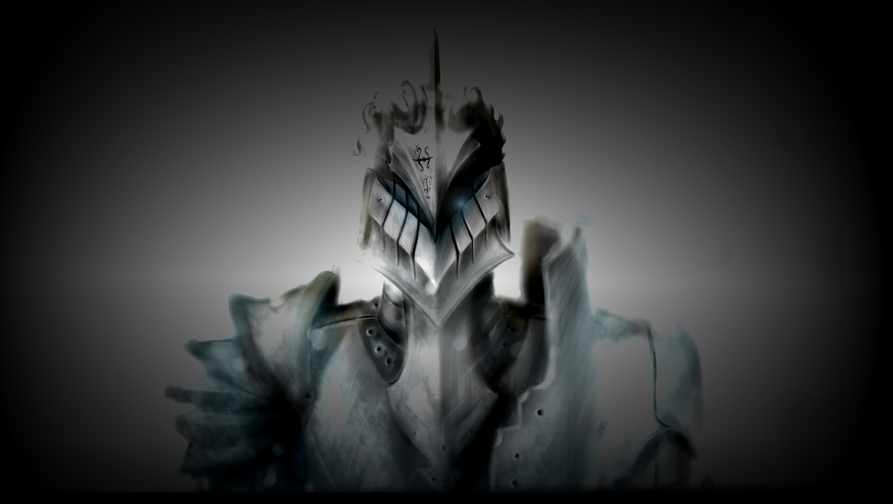

Kazar - Казар
Weiter...
Immer weiter.
Kein ruhen.
Nur töten.
Freund oder Feind?
Egal.
Sie sterben alle sowieso.
Immer weiter...
...kein ruhen...
Es ist alles egal, solange Ibalia unsere Lady Scarlet beschützen kann...
Lady Scarlet war mir von Anfang an egal...
es ging mir nur um Ibalia...
Ich darf sie nicht verlieren...
Ich weiß nichtmehr wie lange ich jetzt schon gegen diese Wesen kämpfe...
Mein Körper ist getränkt in Blut, Mein Schwert habe ich schon längst weggeschmissen.
Ich rieche nichts außer Blut.
Ich fühle nichts außer Blut..
Ich sehe nichts mehr außer potentielle Opfer, die ich für Ibalia preisgeben werde.
Freund oder Feind, sie alle stehen mir nur im Weg.
Ich genieße diesen Kampf in vollen zügen, nichts hat sich jeh so gut angefühlt.
Nichts...
...nichts?
...
...Was ist aber... wenn all dies aufhört?
Werde ich dann nurnoch wie ein Jagdhund auf die nächste Saison warten müssen?
Dies darf nicht enden.... jedoch muss es enden...
Ich schlachtete alles was mir im weg steht, Ich beschütze das letzte Tor zu Ibalia und Lady Scarlet...
Immer wieder, immer mehr...
...Die selben vergrauten Gesichter....
Alles nur....
Und dann passierte es...
Ich hörte ein lautes Knallen, gefolgt von einem lautem Schrei
"Iba!"
Lady Scarlet? Ibalia?!Ich wendete mich dem versiegeltem Tor und packte es mit meinen kräftigen Armen und riss es auf.
Ich sah Staubwolken und Geröll, keine Spur von Scarlet und Ibalia...
Ich trat tiefer in den Innenhof und sah Ibalia, ohnmächtig in einen der Türme hinengeschleudert.
Ibalia?
...
Wach auf!
...
Ibalia, Wach auf!...
...
Ibalia, Erwache nun endlich!
...
Lady Scarlet ist in Gefahr!
...
Ibalia, Der Göttertöter ist gekommen um Lady Scarlet zu töten!, Erwache nun endlich!
...
...Das... das kann nicht sein...
Ibalia.... bitte...
...
...bitte...
...
"Kazar!, dem Himmel sei dank, du bist noch am Leben!..."
...
"Kazar?.."
Lady Scarlet....
"Ibalia... Sie lebt."
...
"Ja... Jedoch trägt sie Wunden, die sogar Ich nicht einmal heilen kann... sie wird jedoch überleben, das weiß ich."
Ibalia,...
...Schwester...
Ihre Hörner...
Ich werde dem Göttertöter persönlich die Augen auskratzen, dafür werde ich sorgen...
diese Wut...
Die Kaisersform die mein Erschaffer mir gab wird ihnen sicherlich mehr als nur die Angst einjagen, ja... womöglich sogar etwas respekt....
Ich werde alles tun um über Ibalia zu wachen... koste es, was es wolle...
Freund oder Feind... Ich sehe nichts mehr außer potentielle Opfer, die ich für Ibalia preisgeben werde.